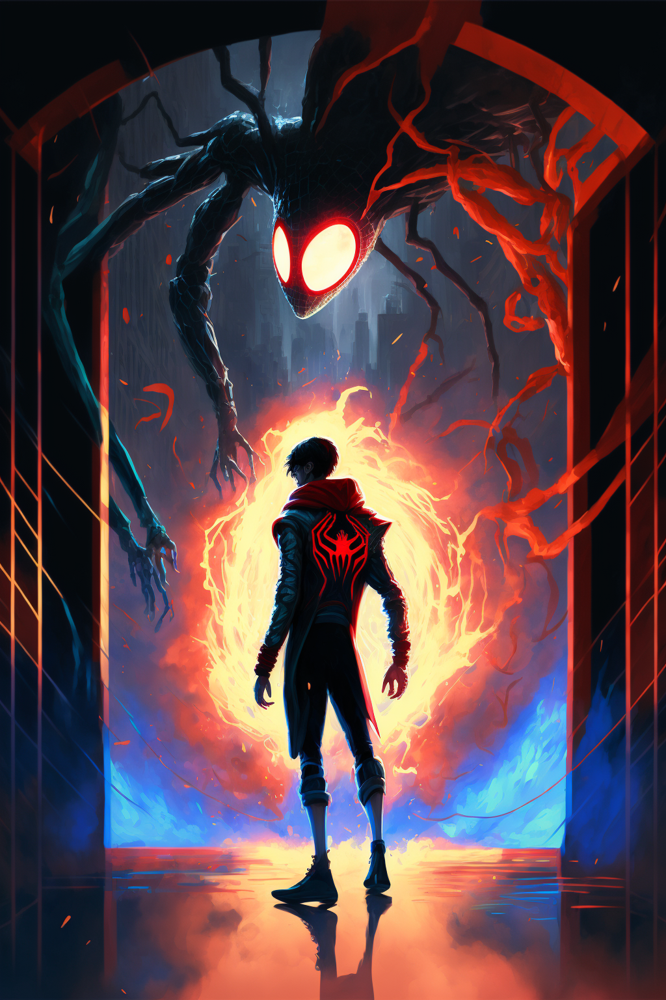
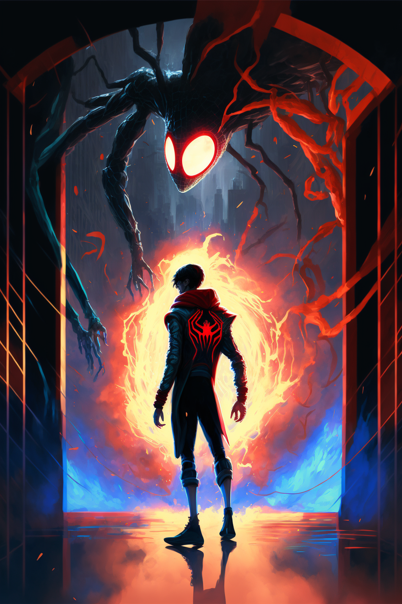
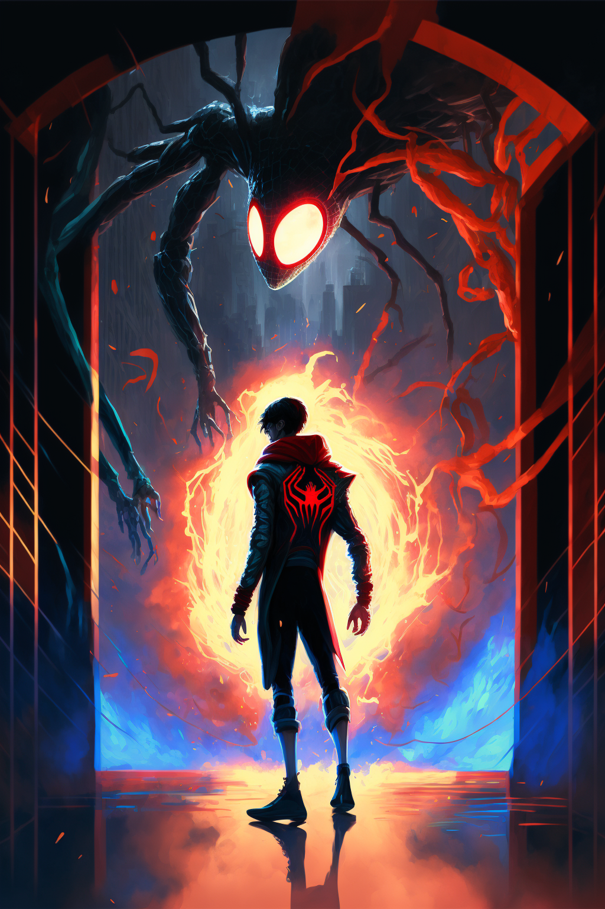
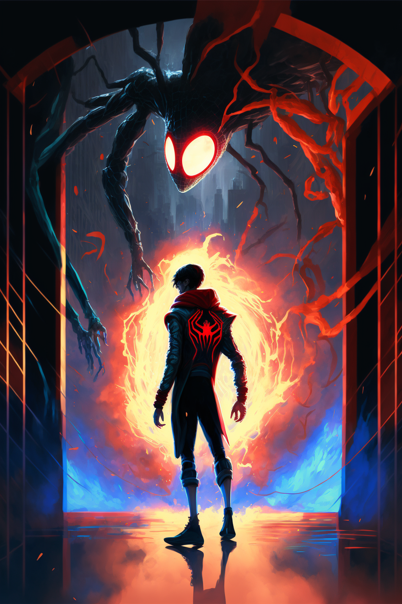

A gamer sitting at a desk surrounded by RGB lighting and geeky memorabilia, deeply focused on the video game they are playing while a dog lounges nearby in the room
A person sitting cross-legged on a mountaintop, surrounded by nature, with closed eyes and a serene expression on their face, embodying inner peace and tranquility
Illidan Tempestira, a character from the game World of Warcraft, in a regal posture, holding a staff, while wearing the crown of Ice and standing in front of a background of a frozen kingdom, as he has just been crowned as the king of the Naga
A Dark Souls warrior standing on the snowy grounds outside of Hogwarts castle, clad in armor and holding a sword, as the castle towers loom behind them in the background
Rick and Morty, the characters from the animated series, standing in a blocky, pixelated Minecraft-like world, with their characteristic style and expressions, and possibly holding some tools from the game. A pig and a Minecraft NPC Villager are also present in the scene, as the background is a minecraft type landscape
The Joker standing with his back towards the viewer, looking over his shoulder with a sinister laugh, as a burning gothic city burns behind him
Miles Morales' Spider-Man, from the movie Spider-Man: Into the Spider-Verse, crossing through a portal, with the Tom Holland's Spider-Man visible in the background, as the portal swirls with energy around them
A depiction of Satan crying on a throne designed as a king's throne, with horns and a regal demeanor, his face should look sad and maybe holding a scepter. The background should be dark and ominous with hints of fire, maybe with a crown on his head and chains on his feet, representing his fall from grace. The overall image should convey a feeling of sadness and despair
Shrek and Donkey in the swamp during a peaceful moment of their older age. The image should depict a serene and idyllic swamp with a variety of vegetation and the two characters in the center of the image. Shrek and Donkey should be sitting together on a fallen tree trunk, with Shrek resting his arm on Donkey's shoulder. They both should have content and peaceful expressions, showing their friendship and the good time they are having. Incorporate features such as a blue sky, small pond, dragonflies and butterflies nearby, to convey a sense of peace and tranquility. The overall tone of the image should be warm, nostalgic and heartwarming. Make sure that both characters have their typical features and clothes, but give them a touch of aging